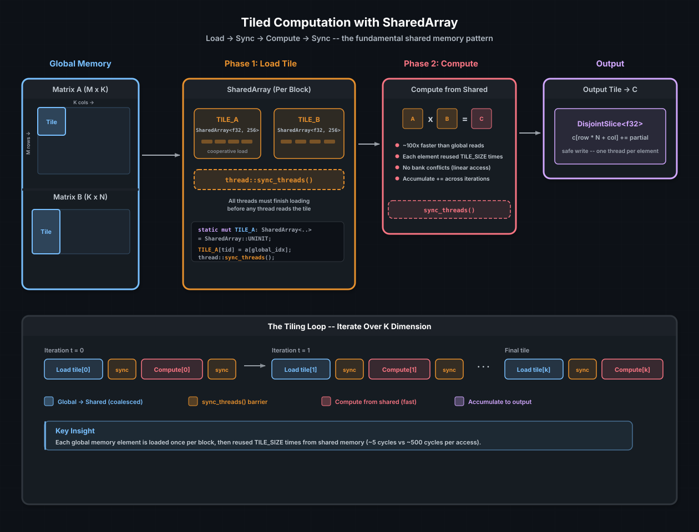

Shared Memory and Synchronization#
Every thread in a CUDA thread block has access to a small, fast scratch-pad called shared memory. It sits on-chip next to the SM's execution units — roughly 100× faster than global memory and roughly 10× faster than the L1 cache. The catch is size: typically 48–228 KB per SM depending on architecture, shared across all blocks running on that SM.
cuda-oxide exposes shared memory through SharedArray and
DynamicSharedArray, both designed to feel like Rust arrays while compiling
to PTX address space 3. This chapter covers how to use them, when to
synchronize, and the tiling pattern that turns naive kernels into fast ones.
参见
CUDA Programming Guide — Shared Memory for hardware details on bank structure, broadcast rules, and capacity per architecture.
Why shared memory matters#
Consider the naive GEMM from the Async MLP Pipeline project. Each thread computes one output element by reading an entire row of A and an entire column of B from global memory. For a 64×64 matrix, that is 128 global loads per thread, and every other thread in the block loads many of the same elements. The hardware dutifully fetches each one from DRAM — or, if you are lucky, the L2 cache.
Shared memory changes the economics. A thread block cooperatively loads a tile of A and a tile of B into shared memory, synchronizes, and then every thread reads from the tile. Each global load is amortized across all threads that reuse the element. For a 16×16 tile, that is a 16× reduction in global memory traffic.
{kind=link}

The tiled computation pattern. Threads cooperatively load tiles of A and B
from global memory into SharedArrays, synchronize, compute partial
products from the fast on-chip memory, synchronize again, and repeat for the
next tile along the K dimension.#
SharedArray — static shared memory#
SharedArray<T, N, ALIGN> is a fixed-size array allocated in shared memory
at compile time. You declare it as a static mut inside the kernel:
use cuda_device::thread::Runtime2DIndex;
use cuda_device::{kernel, thread, DisjointSlice, SharedArray};
const TILE: usize = 16;
#[kernel]
pub fn tiled_sgemm(
m: u32, n: u32, k: u32,
a: &[f32], b: &[f32],
mut c: DisjointSlice<f32, Runtime2DIndex>,
) {
static mut TILE_A: SharedArray<f32, 256> = SharedArray::UNINIT;
static mut TILE_B: SharedArray<f32, 256> = SharedArray::UNINIT;
let n_sz = n as usize;
let row = thread::index_2d_row();
let col = thread::index_2d_col();
let tx = thread::threadIdx_x() as usize;
let ty = thread::threadIdx_y() as usize;
let mut sum = 0.0f32;
let mut t = 0u32;
while t < k / TILE as u32 {
let tile_offset = t as usize * TILE;
// Phase 1: cooperative load
unsafe {
TILE_A[ty * TILE + tx] = a[row * k as usize + tile_offset + tx];
TILE_B[ty * TILE + tx] = b[(tile_offset + ty) * n_sz + col];
}
// All threads must finish loading before any thread reads
thread::sync_threads();
// Phase 2: compute from shared memory
let mut i = 0usize;
while i < TILE {
unsafe {
sum += TILE_A[ty * TILE + i] * TILE_B[i * TILE + tx];
}
i += 1;
}
// Must sync before overwriting the tile in the next iteration
thread::sync_threads();
t += 1;
}
// SAFETY: every thread sees the same `n_sz`.
if let Some(c_idx) = unsafe { thread::index_2d_runtime(n_sz) } {
if let Some(c_elem) = c.get_mut(c_idx) {
*c_elem = sum;
}
}
}
Declaration rules#
SharedArray must be declared as static mut inside the kernel function
body. This tells the compiler to allocate it in PTX shared address space
(.shared). The UNINIT constant skips initialization — the contents are
undefined until threads write to them.
Parameter |
Meaning |
|---|---|
|
Element type ( |
|
Number of elements (fixed at compile time) |
|
Byte alignment (default 0 = natural alignment; use 128 for TMA destinations) |
小技巧
SharedArray is !Sync by design — it wraps UnsafeCell, which prevents
the compiler from assuming immutability across threads. This is correct:
shared memory is inherently mutable by all threads in the block, and the
programmer is responsible for synchronization.
The API surface#
impl<T, const N: usize, const ALIGN: usize> SharedArray<T, N, ALIGN> {
pub const UNINIT: Self;
pub const fn len() -> usize;
pub fn as_ptr(&self) -> *const T;
pub fn as_mut_ptr(&mut self) -> *mut T;
}
// Indexing (unsafe access via static mut)
impl Index<usize> for SharedArray<T, N, ALIGN> { ... }
impl IndexMut<usize> for SharedArray<T, N, ALIGN> { ... }
Indexing is bounds-checked in debug builds. In release (and on the GPU),
the bounds check is elided. If you index out of bounds, you get undefined
behavior — the same rules as any static mut access in Rust.
DynamicSharedArray — runtime-sized allocation#
Sometimes you do not know the tile size at compile time, or you want to
share a single shared memory pool across multiple logical arrays.
DynamicSharedArray allocates from the dynamic shared memory region, whose
size is set at launch time via LaunchConfig::shared_mem_bytes:
use cuda_device::{kernel, thread, DynamicSharedArray};
#[kernel]
pub fn reduce_dynamic(input: &[f32], n: u32, mut output: DisjointSlice<f32>) {
let tid = thread::threadIdx_x() as usize;
// Get a pointer to the dynamic shared memory region
let smem: *mut f32 = DynamicSharedArray::<f32>::get();
unsafe {
// Load from global
let idx = thread::index_1d();
*smem.add(tid) = if idx.get() < n as usize {
input[idx.get()]
} else {
0.0
};
}
thread::sync_threads();
// Tree reduction
let mut stride = thread::blockDim_x() as usize / 2;
while stride > 0 {
if tid < stride {
unsafe {
*smem.add(tid) += *smem.add(tid + stride);
}
}
thread::sync_threads();
stride /= 2;
}
if tid == 0 {
let block_idx = thread::blockIdx_x() as usize;
unsafe {
*output.get_unchecked_mut(block_idx) = *smem;
}
}
}
Launch with:
let config = LaunchConfig {
grid_dim: ((n + 255) / 256, 1, 1),
block_dim: (256, 1, 1),
shared_mem_bytes: 256 * std::mem::size_of::<f32>() as u32,
};
Partitioning dynamic shared memory#
If you need multiple arrays from the same dynamic pool, use offset():
let pool_a: *mut f32 = DynamicSharedArray::<f32>::get();
let pool_b: *mut f32 = DynamicSharedArray::<f32>::offset(
256 * std::mem::size_of::<f32>()
);
offset takes a byte offset from the start of the pool. Make sure the
total does not exceed shared_mem_bytes — there are no runtime guards.
Alignment#
DynamicSharedArray defaults to 16-byte alignment. For TMA operations
(Hopper+), use DynamicSharedArray<f32, 128> to get the required
128-byte alignment. The alignment is encoded in the PTX .align directive.
Synchronization: sync_threads()#
thread::sync_threads() is a block-wide barrier. It compiles to PTX
bar.sync 0 and guarantees two things:
All threads in the block have reached the barrier before any proceed.
All memory writes by those threads are visible to all threads after the barrier (it acts as a memory fence for shared memory).
Without sync_threads() between the load and compute phases, some threads
might read a shared memory location before another thread has written it.
The hardware does not guarantee any ordering within a warp for shared memory
stores — even threads in the same warp can see stale values without a
barrier.
When to sync#
The rule is simple: sync before reading what another thread wrote.
Situation |
Need sync? |
|---|---|
Thread A writes |
Yes |
Thread A writes |
No (same thread) |
Overwriting a tile for the next loop iteration |
Yes (before the new load overwrites data threads might still be reading) |
Reading from |
No |
The tiled GEMM above has two sync points per iteration: one after loading (before computing) and one after computing (before the next load overwrites the tile). Missing either one is a data race.
小技巧
A common mistake is putting sync_threads() inside a conditional branch
that not all threads take. Every thread in the block must reach the same
sync_threads() call, or the kernel will deadlock. If you need divergent
control flow, restructure so the barrier is outside the branch.
Shared memory vs. other approaches#
Approach |
Latency |
Capacity |
Programmer effort |
|---|---|---|---|
Global memory (naive) |
~500 cycles |
GBs |
None |
L1/L2 cache (implicit) |
~30–100 cycles |
128 KB–40 MB |
None |
Shared memory (explicit) |
~5 cycles |
48–228 KB per SM |
Tiling, sync, bank awareness |
Registers |
~1 cycle |
64K × 32-bit per SM |
Compiler-managed |
Shared memory is the programmer's tool for when the cache is not enough. The L1 and L2 caches help automatically, but they are at the mercy of the access pattern and eviction policy. Shared memory gives you explicit control: you decide what to load, when to load it, and how long to keep it.
Bank conflicts#
Shared memory is divided into 32 banks (one per warp lane). If two threads in the same warp access different addresses that map to the same bank, the accesses are serialized — a bank conflict. The penalty is 2× latency for a 2-way conflict, up to 32× for a 32-way conflict.
The mapping is straightforward: consecutive 32-bit words map to consecutive
banks. So TILE[0] is in bank 0, TILE[1] is in bank 1, ..., TILE[32]
is back in bank 0. A common conflict-free access pattern is:
// Each thread reads a different column: thread k reads TILE[row + k]
// If TILE_WIDTH = 32 (or a multiple), add padding: SharedArray<f32, 33 * 16>
For the 16×16 tiled GEMM, there are no bank conflicts in the inner loop
because TILE_A[ty * 16 + i] reads a row (consecutive elements = different
banks) and TILE_B[i * 16 + tx] reads a column with stride 16.
参见
CUDA Programming Guide — Shared Memory Bank Conflicts for a detailed treatment of bank conflict rules and padding strategies.
Putting it all together#
Here is the progression from naive to tiled, applied to the GEMM from our MLP pipeline:
Version |
Global loads per thread (64×64) |
Shared loads per thread |
Speedup |
|---|---|---|---|
Naive ( |
128 |
0 |
1× |
Tiled (16×16 tiles) |
8 (4 iterations × 2 tiles) |
128 |
~4–10× |
Tiled + double buffering |
8 |
128 (overlapped) |
~6–15× |
The tiled version trades global memory bandwidth for shared memory bandwidth
and computation — a good trade when the kernel is memory-bound. The
double-buffered variant overlaps the next tile's load with the current tile's
computation, hiding even more latency, but requires two SharedArrays per
matrix and more complex synchronization.
参见
Warp-Level Programming — shuffle-based reduction as an alternative to shared memory for small reductions
Tensor Memory Accelerator — hardware- accelerated global→shared copies that replace the manual load loop